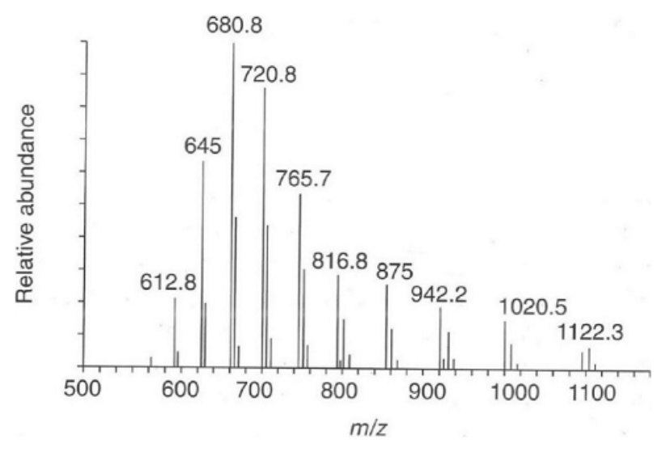
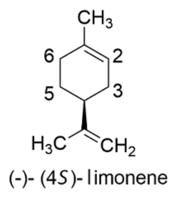
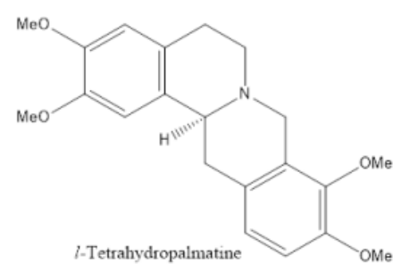

開卷有益 ／
藥師 ／ 藥物分析與生藥學 ／ 113 年第 1 次113 年第 1 次藥師藥物分析與生藥學試題與答案
這一頁是民國 113 年第 1 次藥師藥物分析與生藥學的整份歷屆試題，共 80 題，題目與標準答案出自考選部「國家考試試題及測驗式試題答案」開放資料，其中 75 題附有詳解。以下逐題列出題幹、選項與答案；要計時作答或記錄成績，請用線上練習。
考選部原始場次代碼：113020
線上作答這一科 →
全部 80 題
第 1 題
下列何者非中華藥典中收載之水分測定法？
（A） Karl Fischer滴定法（B） 甲苯蒸餾法（C） 核磁共振法（D） 重量分析法答案：（C）
詳解與考點 正解：本題要辨別中華藥典水分測定的既有方法與一般分析工具。核磁共振法雖可在研究或特定分析中觀察氫核訊號，並非題目所指中華藥典收載的水分測定法，故選 C。
A：Karl Fischer 滴定法以水與試劑的專一反應定量，適合低含量水分測定，是藥典水分檢測的代表方法。
B：甲苯蒸餾法利用與水共沸蒸餾並量取分離出的水，適用於某些不宜直接滴定的檢品。
D：重量分析法以樣品處理前後的質量變化推估水分，與乾燥減重的重量測定原理相通；它不像 NMR 是以核訊號辨識水分，因此不屬本題的排除項。
本題考點：藥典水分測定（pharmacopoeial water determination）——選擇方法時先區分化學滴定、共沸蒸餾與重量測定，不能把可分析氫核的儀器直接視為藥典法；Karl Fischer 滴定（Karl Fischer titration）——需要專一測定少量水分時，優先連結碘量反應而非乾燥失重。
第 2 題
關於pH值之定義，下列何者正確？
（A） pH = log [H+]（B） pH = ln [A-]/[HA]（C） pH = -log [H+]（D） pH = log [A-]/[HA]答案：（C）
詳解與考點 正解：pH 的嚴格定義以氫離子活度為基礎；在稀溶液的常用近似下，pH = -log [H+]。負號反映氫離子濃度愈高，pH 數值愈小，故選 C。
A：pH = log [H+] 少了負號，會把酸度與 pH 的方向顛倒。
B：ln [A-]/[HA] 是酸鹼緩衝比值的一部分，但 pH 的 Henderson-Hasselbalch 關係還需要 pKa，且慣用常用對數，不是此式。
D：log [A-]/[HA] 同樣只是緩衝系統比值的一部分，未加 pKa 不能直接等於 pH。
本題考點：pH 定義（pH definition）——由氫離子判斷酸鹼度時使用負的常用對數，濃度增加會使 pH 下降；Henderson-Hasselbalch equation——看到 [A-]/[HA] 時要補上 pKa 才是緩衝溶液的 pH 式，不能與 pH 定義混用。
第 3 題
關於非水鹼滴定法中甲醇鈉試劑之敘述，下列何者錯誤？
（A） 係氫氧化鈉之甲醇溶液（B） 常搭配使用之指示劑為偶氮紫（azo violet）（C） 接觸二氧化碳或水分時會產生混濁（D） 可用苯甲酸測定其力價答案：（A）
詳解與考點 正解：甲醇鈉試劑是 sodium methoxide 的甲醇溶液，來自 sodium metal 與 methanol 的反應；把它說成 sodium hydroxide 的甲醇溶液，將兩種鹼的化學種混為一談，故選 A。
B：azo violet 的變色範圍可配合甲醇鈉進行非水鹼滴定的終點判定，故此敘述正確。
C：甲醇鈉會和水分或二氧化碳反應，生成的產物可使溶液混濁；因此試劑須避免暴露於潮濕空氣。
D：benzoic acid 可作為酸性標準物質來測定甲醇鈉的力價，這是將滴定劑濃度定值的做法。
本題考點：非水鹼滴定（nonaqueous alkalimetry）——強鹼在非水溶媒中要先確認實際的鹼性化學種，不能以名稱相近的 hydroxide 取代 alkoxide；滴定劑力價（titrant standardization）——使用前以適當標準物質定值，並避開水分與二氧化碳造成的濃度漂移。
第 4 題
下列何者最不適合用於測定顛茄葉所含的水分？
（A） 重量法（B） 甲苯蒸餾法（C） 費氏滴定法（D） 乾燥減重法答案：（C）
詳解與考點 正解：顛茄葉是植物性生藥，水分會受組織基質與萃取效率影響。Karl Fischer 滴定要求水分能充分釋出且樣品成分不干擾試劑反應；直接套用於粗碎葉材最不利於確保完全萃取與專一反應，故選 C。
A：重量法可由樣品處理前後的質量差估算水分，對植物性檢品是可考慮的基本方法。
B：甲苯蒸餾法可將植物組織中的水以共沸蒸餾方式帶出並分離量測，適合處理基質複雜的生藥。
D：乾燥減重法雖可能同時反映部分揮發性成分，但作為生藥含水相關的常用檢測法，仍比直接 Karl Fischer 滴定更適切。
本題考點：生藥水分測定（crude drug moisture determination）——植物性檢品先評估水分能否完全釋出與基質是否干擾，再選擇滴定或蒸餾法；Karl Fischer 適用性（Karl Fischer applicability）——方法專一不等於所有樣品都適用，萃取不完全或副反應會先破壞定量可信度。
第 5 題
關於非水酸滴定法的敘述，下列何項錯誤？
（A） 當鹼以鹽酸鹽或氫溴酸鹽存在時，於滴定前不需要先去除相對離子（counter ion）（B） 典型的滴定劑是無水過氯酸的乙酸溶液（C） 滴定劑之配置過程中，加入乙酸酐的目的是去除過氯酸的水（D） 結晶紫為此類滴定的常用指示劑答案：（A）
詳解與考點 正解：非水酸滴定中，弱鹼若以 hydrochloride 或 hydrobromide 鹽存在，counter ion 會干擾滴定反應與終點判讀，通常須先適當處理，不能直接說不需要移除，故選 A。
B：以無水過氯酸配成乙酸溶液，是非水酸滴定測定弱鹼時的典型滴定劑系統。
C：配置滴定劑時加入乙酸酐可和水反應，降低過氯酸或溶媒帶入的水分對非水系統的影響。
D：結晶紫在乙酸性非水酸滴定中具有合適的變色行為，是常用的終點指示劑。
本題考點：非水酸滴定（nonaqueous acidimetry）——弱鹼鹵酸鹽進行滴定前，先判斷 counter ion 是否會消耗滴定劑或扭曲終點；無水條件（anhydrous condition）——非水滴定對水分敏感，配置與保存時須以去水措施維持酸度與終點清晰度。
第 6 題
在鉛檢查法中，鉛離子在何種pH值下可與二苯硫腙（dithizone）結合成安定的螯合物？
（A） 2（B） 10（C） 13（D） 7答案：（B）
詳解與考點 正解：鉛離子與 dithizone 形成安定螯合物時，需要使配位基具有足夠的去質子化比例；在鉛檢查法的操作條件下，pH 10 最能提供適當的鹼性與螯合穩定度，故選 B。
A：pH 2 過酸，dithizone 的配位能力受質子化影響，難以形成題目所需的安定鉛螯合物。
C：pH 13 鹼性過強，鉛可能發生氫氧化物相關反應，反而不利於以 dithizone 進行穩定且選擇性的萃取螯合。
D：pH 7 的配位基去質子化不足，對鉛－dithizone 螯合的條件不如 pH 10 合適。
本題考點：dithizone 螯合（dithizone chelation）——金屬離子檢查法先以 pH 控制配位基的可配位型態，再比較螯合物穩定度；pH 對萃取分析的影響（pH-controlled extraction）——酸鹼度同時改變配位基與金屬物種，最佳 pH 不是任意中性或越鹼越好。
第 7 題
下列何者是電化學電池的電位差計算公式？
（A） Ecell = E0 – log[(Ecathode + Eanode)/2]（B） Ecell = E0 + log[(Ecathode + Eanode)/Eanode]（C） Ecell = Eanode – Ecathode（D） Ecell = Ecathode – Eanode答案：（D）
詳解與考點 正解：電池電位以陰極的還原電位減去陽極的還原電位計算；使用表列還原電位時，E°cell = E°cathode - E°anode，故選 D。
A：此式將兩個電極電位取平均後再取對數，並非電池電位或 Nernst equation 的標準寫法。
B：此式把電極電位相加後再作不具意義的比值，沒有對應到氧化還原半反應與反應商的關係。
C：Eanode - Ecathode 把陰極與陽極的次序顛倒，會得到與電池自發方向相反的符號。
本題考點：電池電位（cell potential）——表列值皆為還原電位時，固定用陰極減陽極，勿另行把陽極電位改號後再重複扣除；Nernst equation——只有在加入反應商校正非標準狀態時才進入對數項，不能任意對電極電位本身取對數。
第 8 題
相較於specific-gravity bottle，下列何者為Geissler pycnometer裝置之優點？
（A） 可讀取容器中心溫度（B） 內建秤量裝置（C） 較不易產生氣泡（D） 所需樣品較少答案：（A）
詳解與考點 正解：Geissler pycnometer 的設計可讀取容器中心的溫度，這是相較於 specific-gravity bottle 的優點。密度對溫度敏感，能在量測位置直接取得溫度，有助於進行正確的密度換算，故選 A。
B：pycnometer 仍需以外部天平量測質量，裝置本身沒有內建秤量功能。
C：氣泡控制取決於充填操作與樣品狀態，並非 Geissler pycnometer 相對於 specific-gravity bottle 的主要設計優點。
D：所需樣品量由容器容量決定，Geissler pycnometer 的核心優勢是溫度讀取，不是必然使用較少檢品。
本題考點：pycnometer 密度測定（pycnometric density determination）——比較密度量測器材時，先看其是否能同時控制或讀取溫度，因為密度校正依賴溫度；specific gravity——以固定體積的質量求比重時，容積、溫度與秤量三者都要獨立控制。
第 9 題
關於脂質性質的敘述，下列何者錯誤？
（A） 酯價和脂肪酸甘油酯含量成反比（B） 酸價如超過上限值，多數情形下是經由水解反應所造成（C） 皂化價可用於判斷是否添加不可皂化物（D） 同時參照碘價和皂化價可用於偵測橄欖油是否摻假答案：（A）
詳解與考點 正解：酯價是皂化價扣除酸價後，反映皂化酯化脂肪酸所需鹼量的數值。脂肪酸甘油酯含量增加時，可皂化的酯鍵增加，酯價應呈同向關係而非成反比，故選 A。
B：酸價升高常表示游離脂肪酸增加；脂質經水解後產生游離脂肪酸，正可造成此現象。
C：不可皂化物不消耗皂化所需的鹼，摻入後會使觀察到的皂化價偏離純油脂預期值，因此可作為判別線索。
D：碘價反映不飽和程度，皂化價與脂肪酸鏈長及可皂化成分相關；兩者併看可協助偵測橄欖油摻假。
本題考點：酯價（ester value）——用皂化價減酸價區分酯化脂肪酸與游離脂肪酸，判斷方向時看可皂化酯鍵的多寡；油脂劣變與摻假（lipid quality indices）——酸價偏向水解劣變，碘價與皂化價則用於成分與不飽和度的交叉辨識。
第 10 題
有關凱氏氮定量法（Kjeldahl method）之敘述，下列何者錯誤？
（A） 測定含硝酸鹽或亞硝酸鹽檢品時，必須先以氫氧化鈣固定之（B） 加入硫酸鉀是為了提高消化溫度（C） 加入硫酸銅可縮短消化時間（D） 測定出的氮含量乘以6.25即可計算出食物中粗蛋白質含量答案：（A）
詳解與考點 正解：傳統 Kjeldahl method 以硫酸消化將可測的氮轉成 ammonium；硝酸鹽與亞硝酸鹽的氮不會因一般消化自動完全納入測定，須採適當的改良還原處理。以 calcium hydroxide 固定並不是此干擾的正確前處理原則，故選 A。
B：硫酸鉀可提高消化液的沸點與消化溫度，使有機物分解更完全。
C：硫酸銅在消化中扮演催化角色，可加速有機氮轉化為可測定的 ammonium。
D：以測得總氮乘以 6.25 估算粗蛋白質，是食品分析中常用的換算慣例。
本題考點：Kjeldahl nitrogen determination——看到消化步驟時，判斷目標是把有機氮轉成 ammonium，並非直接量所有含氮物種；硝酸鹽與亞硝酸鹽干擾（nitrate and nitrite interference）——檢品含氧化態氮時，先確認是否有額外還原步驟，不能沿用一般 Kjeldahl 消化。
第 11 題
下列何者無法用於判斷藥物的晶體多形性（polymorph）？
（A） diffusion spectroscopy（NMR）（B） solid-state NMR（C） attenuated total reflectance（IR）（D） diffuse reflectance（IR）答案：（A）
詳解與考點 正解：晶體多形性差異存在於固態晶格與分子堆積。diffusion spectroscopy（NMR）通常量測溶液中分子的擴散行為，檢品一旦溶解，原有晶格資訊已消失，因此無法用來判斷 polymorph，故選 A。
B：solid-state NMR 直接觀察固態分子的局部化學環境，可因不同晶格排列而呈現可辨識差異。
C：attenuated total reflectance（IR）可量測固體樣品的振動吸收，晶型改變造成的分子間作用差異可反映於光譜。
D：diffuse reflectance（IR）同樣適用於固體粉末的紅外光譜量測，可協助比較不同晶型的吸收特徵。
本題考點：晶體多形性（polymorphism）——判斷晶型時優先選保留固態晶格資訊的技術，溶解後再量測的訊號通常不能回推原晶型；固態光譜（solid-state spectroscopy）——solid-state NMR 與固體 IR 可利用局部環境或振動差異區辨 polymorph。
第 12 題
在270 MHz 的1H-核磁共振譜中，有一質子之訊號為四重峰（quartet），分別位於4.13、4.11、4.09及4.07 ppm，該質子之化學位移與偶合常數分別為何？
（A） 4.12 ppm；16.2 Hz（B） 4.08 ppm；10.8 Hz（C） 4.10 ppm；5.4 Hz（D） 4.10 ppm；8.1 Hz答案：（C）
詳解與考點 正解：四重峰的化學位移取四個等間距訊號的中心。外側峰中心為 (4.13 ppm + 4.07 ppm) / 2 = 4.10 ppm。相鄰峰距為 4.13 ppm - 4.11 ppm = 0.02 ppm。270 MHz 儀器中，0.02 ppm = 0.02 × 10^-6，因此 J = 0.02 × 10^-6 × 270 × 10^6 Hz = 5.4 Hz，故選 C。
A：4.12 ppm 並非四重峰的中心；16.2 Hz 是把外側峰總距 0.06 ppm 直接換算，卻忽略四重峰的總距包含 3 個相鄰偶合間隔。
B：4.08 ppm 不是訊號中心，10.8 Hz 對應 0.04 ppm 的錯誤間隔，沒有使用相鄰兩峰的 0.02 ppm。
D：4.10 ppm 的中心位置正確，但 8.1 Hz 對應 0.03 ppm，與任一相鄰峰距不符。
本題考點：NMR 化學位移（chemical shift）——多重峰的 δ 值取整組峰的中心，不取任一單峰位置；自旋－自旋偶合（spin-spin coupling）——J 取相鄰峰距，再以儀器頻率將 ppm 換算成 Hz；多重峰判讀（multiplet analysis）——四重峰有 3 個等大的相鄰間隔，外側總距不能直接當成單一 J。
第 13 題
下列何種核磁共振譜可辨識化合物中的三級碳訊號？
（A） COSY（B） DEPT-90（C） TOCSY（D） NOESY答案：（B）
詳解與考點 正解：DEPT-90 只顯示帶一個氫的碳，也就是 CH 訊號；在碳級數分類中，CH 為三級碳，因此可用 DEPT-90 辨識題目所問的三級碳訊號，故選 B。
A：COSY 顯示經鍵偶合的質子－質子相關性，主要用於建立相鄰氫的連接關係，不是碳級數篩選實驗。
C：TOCSY 延伸觀察同一自旋系統內的質子相關性，仍屬質子訊號的關聯判讀。
D：NOESY 偵測空間接近的核間效應，適合推估立體或空間關係，不能專一辨識三級碳。
本題考點：DEPT NMR（distortionless enhancement by polarization transfer）——要分辨碳級數時，以 DEPT-90 對應 CH、DEPT-135 再配合 CH2 與 CH3 的相位判讀；二維質子 NMR（2D proton NMR）——COSY、TOCSY 與 NOESY 分別處理經鍵、自旋系統與空間相關，不能取代碳訊號分類。
第 14 題
關於選項化合物之1H-NMR圖譜中氫訊號的敘述，下列何者錯誤？
（A） CH3-C(=O)-CH3的兩組甲基氫之屬性為enantiotopic（B） CH3Br的三個氫之屬性為homotopic（C） CH3-CH2-CHBr(C1)的-CH2-上兩個氫之屬性為diastereotopic（D） CH3-CH2-CHBr(C1)的-CH3上三個氫之屬性為homotopic答案：（A）
詳解與考點 正解：本題要以取代測試判斷氫的拓撲關係。CH3-C(=O)-CH3 兩端甲基可由分子對稱性互換，任取一端的氫以同一標記取代後得到的是同一化合物；同一甲基內的氫也可由旋轉互換，故其甲基氫屬 homotopic，不是 enantiotopic。故選 A。
B：CH3Br 的三個氫可藉三重旋轉軸互換，以任一氫取代均得到相同產物，故（B）所述 homotopic 正確。
C：CH3-CH2-CHBr(C1) 已有 C1 手性中心，-CH2- 的兩個氫分別取代後，產物與既有手性中心形成的關係不同，得到的是非鏡像的立體異構物，故為 diastereotopic。
D：CH3-CH2-CHBr(C1) 末端 -CH3 的三個氫可藉快速旋轉互換，故（D）所述 homotopic 正確。
本題考點：同位性（homotopicity）——以任一原子取代後若產物完全相同，即判為 homotopic；對映異位性（enantiotopicity）——取代後若只得到一對對映體，才判為 enantiotopic；非對映異位性（diastereotopicity）——分子已有手性中心時，鄰近 CH2 的兩氫取代後若成非對映體，通常在 1H-NMR 顯示不同訊號。
第 15 題
於某純光學活性化合物中混入其鏡像異構物，造成其[α]值減少5%，則兩者之含量比例為多少？
（A） 90：10（B） 92.5：7.5（C） 95：5（D） 97.5：2.5答案：（D）
詳解與考點 正解：關鍵在旋光度減少的比例就是兩對映體的 enantiomeric excess。原本為純對映體，混入鏡像異構物後 [α] 保留 95%，故 ee = 95%。設原對映體分率為 x、鏡像異構物分率為 y，則 x + y = 1，x - y = 0.95；解得 x = 0.975、y = 0.025，因此含量比為 97.5:2.5。故選 D。
A：90:10 的 ee 為 90% - 10% = 80%，旋光度會減少 20%，不是題目的 5%。
B：92.5:7.5 的 ee 為 85%，旋光度會減少 15%，與題設不符。
C：95:5 的 ee 為 90%，旋光度會減少 10%，仍大於題目所示的 5%。
本題考點：對映體過量（enantiomeric excess, ee）——兩對映體的旋光度絕對值相同時，以 ee = |x - y| 判斷樣品保留多少光學純度；旋光度與組成（optical rotation and composition）——純對映體作基準時，觀測旋光度相對保留率可直接換成 ee，再聯立總分率為 1 求兩者比例。
第 16 題
紫外光光譜分析法不適用於下列何者？
（A） 藥品鑑別試驗（B） 測定固體粉末晶型（C） 監測藥品降解的反應動力學（D） 測定藥物含量答案：（B）
詳解與考點 正解：紫外光光譜量測的是具吸收發色團之溶液對紫外光的吸收，不能直接辨識固體粉末的晶型。多晶型是固態分子排列差異，通常需以 X-ray diffraction、IR 或 Raman 等可反映晶格或振動差異的方法判別，故選 B。
A：藥品可藉特徵吸收波長與光譜形狀進行鑑別；分辨關鍵在待測物必須具有可量得的 UV 吸收。
C：若降解反應造成吸光物種濃度改變，連續量測 absorbance 對時間的變化即可建立反應動力學，故（C）可適用。
D：在符合 Beer-Lambert law 的濃度範圍內，吸光度與濃度成正比，UV 光譜法可用於藥物含量測定。
本題考點：紫外可見光定量（UV-Vis spectrophotometry）——待測物有適當吸收且落在線性濃度範圍時，可由 absorbance 回推濃度；固態多晶型（polymorphism）——要分辨晶格或固態振動差異時，優先選 X-ray diffraction、IR 或 Raman，而非一般溶液 UV 測定；反應動力學監測（kinetic monitoring）——反應前後吸收物種改變時，以 absorbance-time 曲線追蹤濃度變化。
第 17 題
電灑游離（ESI）源常與下列何種質量分析器結合而獲得最多分子結構資訊？
（A） 雙聚焦磁場式（double focusing magnetic sector）（B） 四極柱（quadrupole）（C） 飛行時間（time of flight）（D） 三段式四極柱（triple quadrupole）答案：（D）
詳解與考點 正解：ESI 是適合極性與熱不穩定分子的軟游離法；接三段式四極柱後可進行 tandem MS。第一段四極柱選取前驅離子，中段碰撞區使其碎裂，第三段四極柱量測產物離子，碎片關係可提供最多的分子結構資訊，故選 D。
A：雙聚焦磁場式可提供高解析度與精確質量等資訊，但（A）的單一分析器配置不如 MS/MS 能直接建立前驅離子與碎片的對應關係。
B：四極柱可作離子篩選與定量分析；若只有單段四極柱，主要取得的是質荷比訊號，結構碎片資訊較有限。
C：TOF 具有快速掃描與寬質量範圍的優點，但（C）本身不是三段 MS/MS 的前驅離子—產物離子分析配置。
本題考點：電灑游離（electrospray ionization, ESI）——分析極性、大分子或熱不穩定物時，選能在溶液條件下形成多價離子的軟游離法；串聯質譜（tandem mass spectrometry, MS/MS）——需要結構鑑定時，以前驅離子選擇、碰撞碎裂與產物離子量測建立碎片證據；三段式四極柱（triple quadrupole）——Q1、碰撞區與 Q3 的連續配置適合目標離子碎裂分析。
第 18 題
有關拉曼光譜的敘述，下列何者錯誤？
（A） 各種散射效應的強弱順序為：Rayleigh＞Raman＞Tyndall（B） 一般在中紅外光區吸收較弱的官能基，會有較強的拉曼吸收（C） FT-Raman技術可應用於藥品之定量分析（D） Raman技術可應用於固體藥品中多形體的檢測答案：（A）
詳解與考點 正解：拉曼散射是非彈性散射，訊號通常遠弱於彈性的 Rayleigh 散射；膠體粒子造成的 Tyndall 散射又強於 Rayleigh 散射，三者強弱應為 Tyndall>Rayleigh>Raman。選項把 Raman 排在 Tyndall 之前，未辨別 Raman 訊號最弱的特性，故選 A。
B：IR 吸收強度取決於振動時偶極矩變化，Raman 強度則取決於極化率變化；因此在 IR 較弱的振動模式，常可出現較有用的 Raman 訊號，故（B）正確。
C：FT-Raman 可藉拉曼散射強度或特徵峰進行校正與定量，故（C）可作為藥品定量分析方法。
D：不同多晶型的晶格與分子間作用力會改變振動峰位置或峰形，Raman 可用於固體藥品多形體檢測。
本題考點：拉曼與紅外互補性（Raman-IR complementarity）——判讀振動光譜時，看極化率變化選 Raman、看偶極矩變化選 IR；散射強度（scattering intensity）——Rayleigh 是強彈性散射，Raman 為弱非彈性散射，遇到散射排序時不可混為一談；多晶型鑑別（polymorph identification）——固體振動峰有可辨差異時，可用 Raman 建立晶型指紋。
第 19 題
有關原子吸收光譜測定法之敘述，下列何者錯誤？
（A） 燃料氣體為乙炔及助燃氣體（B） 充滿於中空陰極管的氣體為氮氣（C） 阻斷器快速旋轉是為了取得背景訊號強度（D） 主要是測定金屬元素答案：（B）
詳解與考點 正解：中空陰極燈須以惰性氣體維持放電，常用的是 neon 或 argon；惰性氣體離子撞擊陰極後使待測元素原子化並放出其特徵線，不是填充氮氣，故選 B。
A：火焰原子吸收常以 acetylene 作燃料，並搭配空氣或其他助燃氣體形成適當火焰，故（A）正確。
C：阻斷器交替讓燈光通過與遮斷；遮斷時可量得火焰本身的發射與背景訊號，以便與燈源吸收訊號區分。
D：原子吸收光譜主要量測游離原子對特徵線的吸收，常用於金屬與部分元素的定量分析。
本題考點：中空陰極燈（hollow cathode lamp）——原子吸收測定要選與待測元素相對應的特徵線燈，燈內以惰性氣體支持放電；背景校正（background correction）——需把火焰或基質造成的背景訊號與元素特徵吸收分開量測；原子吸收光譜（atomic absorption spectrometry）——測金屬元素時，以基態原子吸收其特徵波長作定量依據。
第 20 題
下列光譜分析法及其光源之配對，何者錯誤？
（A） UV－deuterium lamp（B） visible－sodium lamp（C） fluorescence－xenon lamp（D） IR－metal oxide filament答案：（B）
詳解與考點 正解：可見光吸收測定需要涵蓋可見區的連續光源，通常使用 tungsten 或 tungsten-halogen lamp。sodium lamp 僅在特定鈉發射線附近提供窄線光，不適合作為一般 visible spectrophotometry 的光源，故選 B。
A：deuterium lamp 在 UV 區可提供連續光譜，是 UV 測定的常用光源。
C：xenon lamp 能提供高強度的寬波段激發光，常用於 fluorescence spectrophotometry。
D：IR 測定可使用發熱式連續光源，例如 metal oxide filament 類光源，故（D）配對正確。
本題考點：紫外光源（deuterium lamp）——量測 UV 吸收時，選能覆蓋紫外區的連續光源；可見光源（tungsten-halogen lamp）——量測可見區吸收時，選連續而非單一譜線光源；螢光激發光源（xenon lamp）——需要選擇不同激發波長時，以高強度寬波段光源較合適。
第 21 題
下列光譜法與其常用的測定光徑長度配對，何者錯誤？
（A） IR：1 cm（B） UV－Vis：1 cm（C） fluorescence：1 cm（D） 旋光度：1 cm 或 1 dm答案：（A）
詳解與考點 正解：IR 吸收很強，液體樣品通常必須做成很薄的液膜，光徑常遠短於 1 cm；若使用 1 cm，吸收容易過強而無法取得可判讀的光譜。故（A）將 IR 配成 1 cm 錯誤，故選 A。
B：UV-Vis 常用比色皿的標準光徑為 1 cm，便於以 Beer-Lambert law 進行吸收定量。
C：螢光測定常用 1 cm 方形比色皿，以固定激發與放射光路的幾何條件，故（C）正確。
D：旋光度測定可依樣品濃度與旋光強度選 1 cm 或 1 dm 光管；光徑變長能提高旋光角的可量測性。
本題考點：光徑長（path length）——先依方法的吸收強弱與偵測幾何選擇光徑，不能把各光譜法都固定成同一長度；紅外光譜樣品池（IR cell）——液體 IR 為避免完全吸收，通常用遠短於 1 cm 的薄膜光徑；Beer-Lambert law——UV-Vis 定量時以已知光徑的比色皿使 absorbance 與濃度對應。
第 22 題
在紅外光光譜中，下列何種官能基的吸收訊號約出現在3200～3500 cm-1的範圍？
（A） H－O（B） C=O（C） C=C（D） C≡N答案：（A）
詳解與考點 正解：3200-3500 cm^-1 是 O-H stretching 常見的寬廣吸收區，尤其氫鍵會使峰形變寬；（A）的 H-O 鍵符合此範圍，故選 A。
B：C=O stretching 通常出現在約 1650-1800 cm^-1，位置明顯低於 O-H stretching 區。
C：C=C stretching 多在約 1600-1680 cm^-1，不能以 3200-3500 cm^-1 判定。
D：C≡N stretching 通常位於約 2210-2260 cm^-1，與（A）的羥基伸縮區不同。
本題考點：羥基伸縮振動（O-H stretching）——看到 3200-3500 cm^-1 的寬峰時，優先判斷 O-H 與氫鍵影響；羰基伸縮振動（C=O stretching）——看到約 1650-1800 cm^-1 的強峰時，再考慮羰基；三鍵伸縮振動（C≡N stretching）——看到約 2200 cm^-1 區域的吸收時，才以腈基等三鍵作鑑別。
第 23 題
下列波長何者屬於紫外光範圍？
（A） 0.5 nm（B） 220 nm（C） 500 nm（D） 2200 nm答案：（B）
詳解與考點 正解：一般 UV 範圍約為 200-400 nm，220 nm 落在紫外區，故選 B。
A：0.5 nm 的波長遠短於 UV，屬於 X-ray 或更高能量輻射的範圍，不是一般紫外光。
C：500 nm 位於可見光範圍，接近綠光區域。
D：2200 nm 已進入 infrared 範圍，波長比 UV 長得多。
本題考點：電磁波光譜區域（electromagnetic spectrum）——先以波長尺度判斷區域，約 200-400 nm 為 UV、約 400-700 nm 為 visible；紫外可見光譜（UV-Vis spectroscopy）——選擇量測波長前，先確認待測吸收帶落在 UV 或 visible 範圍；紅外光（infrared radiation）——波長超過可見區後進入 IR，不能與 UV 的短波長特性混淆。
第 24 題
在液相層析－質譜（LC-MS）分析抗體與多肽等大分子藥物品質時，下列何種質譜儀最適合？（atmospheric pressure chemical ionization, APCI; time of flight , TOF; electrospray ionization, ESI）
（A） APCI/TOF MS（B） APCI/quadrupole MS（C） ESI/TOF MS（D） ESI/quadrupole MS答案：（C）
詳解與考點 正解：抗體與多肽屬高極性、大分子且常需保留完整分子資訊的分析物。ESI 可在溶液中溫和形成多價離子，使大分子的 m/z 落入可量測範圍；TOF 具寬質量範圍與快速量測特性，因此 ESI/TOF MS 最適合，故選 C。
A：APCI 較適合可揮發、相對低分子量的分析物；（A）面對抗體與多肽時，游離適配性不如 ESI。
B：APCI/quadrupole MS 同樣受限於 APCI 對大分子與高度極性生物分子的適用性，故不是最佳配置。
D：ESI 可處理大分子，但（D）的 quadrupole 通常在質量範圍與整體大分子品質表徵上不如 TOF 配置合適；分辨關鍵在游離方式之外，分析器也須能有效涵蓋多價離子訊號。
本題考點：電灑游離（electrospray ionization, ESI）——分析抗體、多肽等極性生物大分子時，以軟游離與多價離子降低表觀 m/z；飛行時間分析器（time of flight, TOF）——需要寬質量範圍與快速全掃描時，TOF 適合大分子品質表徵；大分子質譜（biomolecular mass spectrometry）——選儀器時要同時配對游離法與分析器，不可只看其中一項。
第 25 題
有關四極柱式分析器（quadrupole analyzer）之敘述，下列何者錯誤？
（A） 利用相互為直角的直流與射頻振動電場（B） 訊號是由離子撞擊四極柱時所產生（C） 維護較容易（D） 無法提供高解析質譜答案：（B）
詳解與考點 正解：四極柱的四根桿以相互垂直的直流與射頻電場篩選具有穩定軌跡的離子；通過四極柱的離子要再由偵測器量測，不是撞擊四極柱而形成訊號。故（B）把分析器與偵測器的功能混為一談，故選 B。
A：四極柱確實結合直流電壓與射頻電壓，藉離子運動穩定區選擇特定 m/z，故（A）正確。
C：四極柱結構相對簡單、維護便利，是其常見優點之一。
D：一般四極柱多提供單位解析度，並非高解析質譜分析器，故（D）正確。
本題考點：四極柱分析器（quadrupole analyzer）——以 DC 與 RF 電場篩選穩定軌跡離子，判讀時先分清離子分離與離子偵測兩個步驟；質譜偵測器（mass detector）——離子經分析器後由 electron multiplier 等偵測器轉成訊號，不由四極柱撞擊本身讀值；解析度（mass resolution）——需要精確質量或高解析資料時，不把一般 quadrupole 當作高解析分析器。
第 26 題
關於螢光的敘述，下列何者錯誤？
（A） 螢光的強度與激發光的強度有關（B） 螢光光譜與激發光譜具對稱性（C） 螢光之波長比激發光長（D） 螢光強度與濃度大小無關答案：（D）
詳解與考點 正解：在低濃度的線性範圍，螢光強度與螢光物質濃度成正比；濃度升高後還可能受內濾效應或濃度淬熄影響而偏離線性，因此不能說螢光強度與濃度大小無關。故選 D。
A：激發光越強，在其他條件固定且未造成飽和時，產生的螢光通常越強，故（A）正確。
B：許多分子的激發光譜與放射光譜可呈近似鏡像關係，反映相近振動能階間的躍遷；這是（B）看似抽象但屬標準判讀關係的原因。
C：螢光放射前通常先有非輻射能量損失，故放射波長長於激發波長，稱為 Stokes shift。
本題考點：螢光定量（fluorescence quantitation）——只在低濃度線性區將螢光強度直接換算為濃度；Stokes shift——放射前有能量鬆弛時，emission wavelength 會長於 excitation wavelength；濃度淬熄（concentration quenching）——高濃度下訊號未必繼續線性上升，遇到偏離時要考慮自吸收與分子間作用。
第 27 題
使用GC分析peppermint oil中的pinene、limonene、menthone、menthol和menthyl acetate，下列管柱何者 可提供較好的解析度與選擇性？
（A） squalane column（B） silicone OV-1 column（C） BPX-5 column（D） carbowax column答案：（D）
詳解與考點 正解：peppermint oil 同時含 pinene、limonene 等非極性萜烴，以及 menthone、menthol、menthyl acetate 等含氧化合物。carbowax 為極性聚乙二醇固定相，能以極性作用拉開含氧與非極性萜類的差異，對此混合物可提供較佳解析度與選擇性，故選 D。
A：squalane 為非極性固定相，對這組同時含非極性與含氧萜類的成分，選擇性較有限。
B：silicone OV-1 為低極性固定相，主要依揮發性與非極性作用分離，較難充分利用含氧成分的極性差異。
C：BPX-5 雖比純非極性固定相略具芳基選擇性，仍屬低極性範圍；（C）不如 carbowax 能放大本題含氧萜類的極性差別。
本題考點：氣相層析固定相選擇（GC stationary-phase selection）——樣品同時含非極性與含氧化合物時，以固定相極性是否能放大官能基差異判斷選擇性；極性固定相（polar stationary phase）——需要區分 alcohol、ketone、ester 與萜烴時，聚乙二醇類固定相常比低極性相有利；層析解析度（chromatographic resolution）——不是只看沸點差，還要看分析物與固定相的特異交互作用。
第 28 題
以逆相層析法同時分析bupivacaine（pKa 8.1）、pentycaine（pKa 8.1）、prilocaine（pKa 7.9）及 procaine（pKa 9.0），若將移動相的pH值從8降低為7，對於下列何者的滯留時間影響最小？
（A） bupivacaine（B） pentycaine（C） prilocaine（D） procaine答案：（D）
詳解與考點 正解：四種局部麻醉藥皆為鹼性化合物；逆相層析中，pH 由 8 降至 7 會使未離子化、較疏水的比例下降，通常縮短滯留時間。未離子化分率可用 1/(1 + 10^(pKa - pH)) 判斷：procaine 的 pKa 為 9.0，在 pH 8 約為 9%，在 pH 7 約為 1%，絕對變化最小，故其滯留時間受影響最小，故選 D。
A、B：bupivacaine 與 pentycaine 的 pKa 都是 8.1，未離子化分率由 pH 8 的約 44% 降至 pH 7 的約 7%，疏水型比例改變明顯，故（A）、（B）均非答案。
C：prilocaine 的 pKa 為 7.9，未離子化分率約由 56% 降至 11%，變化比（D）更大，滯留時間不會是受影響最小者。
本題考點：逆相層析與離子化（reversed-phase chromatography and ionization）——鹼性分析物的移動相 pH 降低時，離子化增加、疏水滯留通常下降；Henderson-Hasselbalch equation——比較 pH 調整效應時，先以 pKa 與 pH 算未離子化分率，再比較絕對組成變化；容量因子（capacity factor）——分析物越偏未離子化且疏水，通常在逆相固定相滯留越久。
第 29 題
下列何者無法提高使用二氧化矽毛細管（fused-silica capillary）於電泳操作時之電滲流（electro- osmotic flow）？
（A） 將電泳液從酸性提高到中性（B） 提高背景電解質之濃度（C） 提高電場（D） 提高系統溫度答案：（B）
詳解與考點 正解：二氧化矽毛細管的 electro-osmotic flow 受壁面電荷與電雙層影響。提高背景電解質濃度會壓縮電雙層、降低 zeta potential，因而不會提高 EOF；（B）正是無法提高 EOF 的操作，故選 B。
A：電泳液由酸性提高至中性時，矽醇基較易去質子化，管壁負電增加，可提高 EOF。
C：在 zeta potential 與黏度不變時，EOF 速度隨施加電場增加而提高，故（C）可增加流動速度。
D：系統溫度提高通常使緩衝液黏度降低，依 μEOF = εζE/η，EOF 可隨之增加。
本題考點：電滲流（electro-osmotic flow, EOF）——判斷 EOF 時看壁面 zeta potential、電場與溶液黏度；二氧化矽毛細管（fused-silica capillary）——提高 pH 會增加 silanol 去質子化與壁面負電，通常提高 EOF；離子強度（ionic strength）——背景電解質過高會壓縮電雙層並降低 zeta potential，不可誤當成提高 EOF 的手段。
第 30 題
下列關於氣相層析所使用的開口式（wall-coated）及充填式（support-coated）兩種毛細管管柱之敘述， 何者正確？
（A） 漩渦擴散係數（eddy diffusion coefficient）不影響開口式管狀毛細管之峰帶加寬（B） 縱向擴散係數（longitudinal diffusion coefficient）較大，使得充填式管柱之分離效率較低（C） 開口式管狀毛細管內徑愈小，其效率愈低（D） 質量轉移阻力的影響比液相層析大答案：（A）
詳解與考點 正解：開口式管狀毛細管沒有填充粒子，流動相不會因粒間多重路徑而產生 eddy diffusion；在 Van Deemter equation 中，其 A 項可視為零。因此漩渦擴散不影響開口式管狀毛細管的峰帶加寬，故選 A。
B：縱向擴散在低流速時會造成峰帶加寬，但不能把充填式管柱效率較低直接歸因為其縱向擴散係數較大；分辨關鍵在充填結構引入的是多重流徑與傳質條件，不是這條固定的 B 項比較。
C：開口式管狀毛細管內徑縮小會減少徑向擴散距離與傳質阻力，通常提高而非降低效率。
D：氣相中的分子擴散通常較液相快，質量轉移阻力相對較小；（D）將其說成比液相層析大，方向相反。
本題考點：Van Deemter equation——以 H = A + B/u + Cu 判斷峰帶加寬來源，開口式毛細管因無填充粒子而沒有 A 項；漩渦擴散（eddy diffusion）——只有填充床的多重流徑才產生此項；毛細管管徑（capillary internal diameter）——需要提高氣相層析效率時，較小內徑可縮短傳質距離，但仍須兼顧壓降與樣品負荷。
第 31 題
以高效液相層析法分析acetaminophen中的不純物時，提高下列參數之數值後，何者無法增加分離解析度 （resolution）？
（A） 理論板數（theoretical plate number）（B） 理論板高（theoretical plate height）（C） 選擇性（selectivity factor）（D） 容積因子（capacity factor）答案：（B）
詳解與考點 正解：在固定管柱長度下，理論板數 N = L/H；理論板高 H 增加會使 N 降低，峰變寬而解析度下降，不能增加 resolution。故（B）錯在把效率下降的方向說成可提升解析度，故選 B。
A：理論板數增加代表峰帶較窄，resolution 與 √N 成正向關係，故（A）可增加分離解析度。
C：選擇性因子 α 增加能拉開兩峰的相對保留，是改善解析度的有效方式。
D：在適當範圍內提高容量因子 k' 可增加保留與兩峰分開的程度，故（D）可提高解析度。
本題考點：理論板高（theoretical plate height, H）——同一管柱長度下以 H 越小、N 越大判斷效率越好；分離解析度（resolution, Rs）——改善 Rs 可從增加 N、增加 α 或在合理範圍調整 k' 三方向判斷；選擇性因子（selectivity factor, α）——兩峰分不開時，改變固定相或移動相以提高 α 往往比單純拉長保留更有效。
第 32 題
關於液／液相萃取法之敘述，下列何者錯誤？
（A） 利用分配（partition）原理（B） 所用的溶劑體積一般比固相萃取法少（C） 所用的溶劑須不互溶（D） 可能會有乳化（emulsion）現象答案：（B）
詳解與考點 正解：liquid-liquid extraction 以兩個互不相溶液相間的 partition 為基礎，往往需要數次以有機溶劑萃取並合併萃取液；相較之下，solid-phase extraction 通常可用較少溶劑完成保留、洗滌與洗脫。因此（B）把兩者的溶劑用量方向顛倒，故選 B。
A：液／液相萃取的核心是分析物在兩相間的分配平衡，故（A）正確。
C：兩相必須不互溶才能形成明確界面並分層，故（C）是液／液相萃取的必要條件。
D：若兩相分離不佳或有界面活性物質，液／液相萃取可能產生 emulsion，故（D）正確。
本題考點：液／液相萃取（liquid-liquid extraction, LLE）——依分析物在兩互不相溶相間的分配係數決定萃取效率；固相萃取（solid-phase extraction, SPE）——需要減少有機溶劑與利於淨化時，常優先考慮 SPE；乳化（emulsion）——液／液相萃取出現持久混濁界面時，應辨識為乳化造成的相分離問題。
第 33 題
在下列Van Deemter equation中，何種參數與靜相特性關係最大？
（A） A（B） B（C） Cm（D） Cs答案：（D）
詳解與考點 正解：Van Deemter equation 可寫為 H = A + B/u + (Cm + Cs)u。Cs 表示溶質在靜相內進出與擴散造成的質量轉移阻力，直接受固定相膜厚、固定相擴散性等特性影響最大，故選 D。
A：A 項是 eddy diffusion，主要與填充粒子大小、均一性及流徑差異相關，不是靜相本身的主要特性。
B：B/u 是 longitudinal diffusion 項，主要反映溶質在移動相中的分子擴散與流速，非靜相特性。
C：Cm 是移動相中的 mass-transfer resistance，主要受移動相流速、黏度與擴散條件影響；（C）與靜相內傳質的 Cs 不同。
本題考點：Van Deemter equation——看到 H = A + B/u + Cu 時，先把 A、B、C 分別對應多重流徑、縱向擴散與傳質阻力；靜相傳質阻力（stationary-phase mass-transfer resistance, Cs）——需要改善固定相造成的峰帶加寬時，優先檢視固定相膜厚與擴散路徑；移動相傳質阻力（mobile-phase mass-transfer resistance, Cm）——判別 C 項來源時，先區分阻力發生在移動相或靜相。
第 34 題
下列方程式何者用於計算液相層析圖中二波峰之分離解析度（resolution, Rs）? （t、W、W(0.5)分別代 表：滯留時間、波峰底部寬、波峰半高寬）
（A） Rs=2（t2－t1）/（W2－W1）（B） Rs= 2（t2＋t1）/（W2－W1）（C） Rs=1.18（t2＋t1）/（W2(0.5)＋W1(0.5)）（D） Rs=1.18（t2－t1）/（W2(0.5)＋W1(0.5)）答案：（D）
詳解與考點 正解：液相層析的分離解析度以兩峰滯留時間差除以兩峰寬度和計算。題目給的是半高寬，故應使用（D）Rs = 1.18(t2 - t1)/(W2(0.5) + W1(0.5))；分子是兩峰距離，分母是兩峰總展寬，故選 D。
A：雖保留了兩峰滯留時間差，但波峰底部寬應相加而非相減。以 W2 - W1 作分母不能代表兩峰重疊程度，且可能因寬度相近而得到不合理的大值。
B：同時把分子寫成 t2 + t1、分母寫成 W2 - W1。解析度只關心峰與峰之間的間距，不關心兩個滯留時間的總和。
C：半高寬的係數與分母形式正確，但 t2 + t1 不是兩峰距離；應以較晚峰與較早峰的滯留時間相減。
本題考點：分離解析度（resolution, Rs）——比較兩峰可分性時，分子一律取滯留時間差、分母取兩峰寬度和；半高寬公式（half-height width equation）——波峰寬以 W(0.5) 表示時用係數 1.18，不可與底部寬公式混用。
第 35 題
以HILIC層析管（性質類似正相管柱）分析下列五種胺基酸，其層析圖（如下）中波峰D是何種胺基酸？
（A） serine（B） tyrosine（C） threonine（D） phenylalanine答案：（A）
第 36 題
利用液相層析質譜儀進行某蛋白質之分析得到質譜圖如下，則其分子量最接近下列何者？

（A） 8000 Da（B） 12000 Da（C） 16000 Da（D） 20000 Da答案：（B）
第 37 題
以陽離子交換樹脂萃取管進行樣品前處理時，下列何種水溶液最適合做為注入樣品前的沖洗液？
（A） NaCl（B） CaCl2（C） MgBr2（D） CuSO4答案：（A）
詳解與考點 正解：陽離子交換樹脂的固定相帶負電，注樣前以（A）NaCl 沖洗可使交換位點處於可控的 Na+ 型態；Na+ 為單價離子，較不會被強力滯留而妨礙後續待測陽離子交換，故選 A。
B：CaCl2 的 Ca2+ 為二價陽離子，對陽離子交換位點的競爭通常強於 Na+，可能佔據較多交換位點而降低後續萃取效率。
C：MgBr2 的 Mg2+ 同樣是二價陽離子，會比單價 Na+ 更強地與樹脂交換，不適合作為此步驟的優先沖洗液。
D：CuSO4 的 Cu2+ 除了二價競爭外，還可能與樹脂或樣品成分產生較強作用，增加殘留與干擾風險。
本題考點：陽離子交換固相萃取（cation-exchange solid-phase extraction）——固定相帶負電時，以待測陽離子的電荷與交換位點競爭性判斷沖洗液；離子價數與交換競爭（ion-exchange selectivity）——條件相近時，二價陽離子較易強力佔據交換位點，前處理應避免不必要的競爭。
第 38 題
下列何者不適合以離子對－層析分離法（ion-pairing chromatography）進行分析定量？ ①CH3CH2CH2CH2NH2 ②CH3CH2CH2COOH ③CH3CH2CH2CH2OH ④(CH3CH2)4N+Br－
（A） ①（B） ②（C） ③（D） ④答案：（C）
詳解與考點 正解：離子對層析必須讓分析物具有可與離子對試劑作用的電荷。（C）CH3CH2CH2CH2OH 是中性醇類，沒有適合在一般條件下形成離子對的可離子化基團，因此不適合此法定量，故選 C。
A：CH3CH2CH2CH2NH2 為胺類，在酸性條件下可質子化成陽離子，能與陰離子型離子對試劑形成疏水性離子對。
B：CH3CH2CH2COOH 為羧酸，在適當 pH 下可去質子化成陰離子，能以陽離子型離子對試劑調整保留行為。
D：(CH3CH2)4N+Br- 含永久帶正電的四級銨離子，可直接作為離子對層析的離子性分析物。
本題考點：離子對層析（ion-pairing chromatography）——先判待測物能否帶電，再選相反電荷的離子對試劑；可離子化官能基（ionizable functional group）——胺與羧酸可用 pH 調整電荷，中性醇通常不能靠離子對機制增加保留。
第 39 題
下列何種呈色試劑，一般不適用於薄層層析之顯色？
（A） 20～50% sulfuric acid in ethanol（B） 10% hydrochloric acid（C） ninhydrin solution（D） anisaldehyde solution答案：（B）
詳解與考點 正解：薄層層析顯色劑必須能與斑點成分反應或經加熱產生可辨識的顏色。（B）10% hydrochloric acid 單獨缺乏一般性顯色反應，通常不作為 TLC 的顯色試劑，故選 B。
A：20-50% sulfuric acid in ethanol 可噴灑後加熱，使許多有機化合物脫水或碳化而顯色，屬常用的通用顯色方式之一。
C：ninhydrin solution 可與胺基酸及其他含游離胺基的化合物反應產生顏色，適合用於這類斑點的偵測。
D：anisaldehyde solution 可與多類天然物反應並形成特徵性顏色，是生藥 TLC 常用的衍生化顯色試劑。
本題考點：薄層層析顯色（thin-layer chromatography visualization）——先看試劑是否能對官能基產色或加熱碳化，不可把一般酸液直接當成顯色劑；ninhydrin 反應（ninhydrin reaction）——斑點含游離胺基時優先用 ninhydrin 辨識。
第 40 題
以HPLC分析hydrocortisone acetate cream，為減少高脂溶性賦形劑對層析管柱的傷害，並考量回收率與干 擾物，下列前處理之萃取流程何者最適當？
（A） 以稀硫酸萃取（B） 以稀氨水萃取（C） 以甲醇／己烷分配，取甲醇層（D） 以甲醇／己烷分配，取己烷層答案：（C）
詳解與考點 正解：（C）以 methanol/hexane 分配後取 methanol 層。hydrocortisone acetate 雖為類固醇酯，仍具有可溶於甲醇的極性官能基；此流程可讓高脂溶性乳膏賦形劑多留在 hexane 層，兼顧待測物回收與保護 HPLC 管柱，故選 C。
A：hydrocortisone acetate 沒有適合以稀硫酸作選擇性酸鹼萃取的強鹼性基團；此流程也不能有效把脂溶性基質與待測物分開。
B：稀氨水同樣不是此中性類固醇酯的適當選擇性萃取條件，且鹼性環境可能增加不必要的水解或降解風險。
D：取 hexane 層會同時帶入油脂、蠟質等高脂溶性賦形劑；這正是要避免進入 HPLC 管柱的干擾物。
本題考點：液液分配前處理（liquid-liquid partitioning）——乳膏含高脂溶性基質時，以非極性層帶走基質、極性醇層保留待測物；類固醇酯分析（steroid ester analysis）——中性類固醇不宜硬套酸鹼萃取，先依官能基與溶劑分配判斷。
第 41 題
下列何者不屬於karaya gum的用途？
（A） 製錠時製粒過程（granulation）中的 binder（B） 乳化劑（emulsifying agent）（C） 膨脹性瀉劑（bulk laxative）（D） 牙用黏合劑（dental adhesive）答案：（A）
詳解與考點 正解：karaya gum 主要作為膨脹性瀉劑、乳化相關賦形劑與牙用黏合材料；（A）製粒過程中的 binder 並非其典型用途。本題問不屬於其用途者，故選 A。
B：karaya gum 能在水中形成黏稠分散系，具有協助穩定乳化系統的用途，因此乳化劑屬其可用範圍。
C：karaya gum 吸水後膨脹，可增加腸內容物體積並促進蠕動，符合 bulk laxative 的用途。
D：karaya gum 的吸水膨潤與黏附性可用於牙用黏合劑，幫助義齒與口腔黏膜間形成黏著層。
本題考點：karaya gum 用途（karaya gum applications）——見到吸水膨潤性天然膠時，優先聯想到 bulk laxative 與黏附用途；製粒黏合劑（granulation binder）——判斷時須區分一般天然膠的分散用途與特定製錠製粒流程的典型 binder。
第 42 題
Inulin屬於下列何者？
（A） arabin（B） fructan（C） galactan（D） glucan答案：（B）
詳解與考點 正解：inulin 的主鏈由 fructose 單元構成，屬於（B）fructan；判斷多醣分類時看重複單醣的種類，不以來源植物名稱判斷，故選 B。
A：arabin 是以 arabinose 為主要組成單元的多醣名稱，與以 fructose 為主的 inulin 不同。
C：galactan 的主要單醣是 galactose，不是 fructose，因此不能用來分類 inulin。
D：glucan 是以 glucose 為主的多醣，如澱粉或纖維素的分類方向；inulin 不屬此類。
本題考點：果聚糖（fructan）——多醣由 fructose 重複單元構成時判為 fructan；多醣命名（polysaccharide nomenclature）——看到 arabinan、galactan、glucan、fructan 時，直接對應其主要單醣來源。
第 43 題
下列俗名與學名之配對，何者正確？
（A） bitter almond－Prunus armeniaca（B） wild cherry－Brassica nigra（C） American ginseng－Panax quinquefolius（D） cascara sagrada－Rhamnus frangula答案：（C）
詳解與考點 正解：（C）American ginseng 的學名為 Panax quinquefolius，是人參屬的北美藥用植物；俗名與學名配對須先辨認植物屬別，故選 C。
A：Prunus armeniaca 為杏類植物，並非 bitter almond；兩者雖同屬核果類植物，俗名不可互換。
B：Brassica nigra 是 black mustard，不是 wild cherry；wild cherry 為 Prunus 屬植物，與十字花科芥類不同。
D：Rhamnus frangula 指 frangula buckthorn，與 cascara sagrada 所指的生藥來源不是同一配對。
本題考點：美國人參鑑別（American ginseng identification）——看到 American ginseng 時直接對應 Panax quinquefolius；生藥學名配對（crude-drug botanical nomenclature）——先以屬別排除明顯不同的植物群，再核對俗名所指的藥用來源。
第 44 題
固醇類藥物會增加強心苷（cardiac glycoside）之毒性，主要是與細胞內何種離子濃度變化有關？
（A） 鈉離子濃度增加（B） 鉀離子濃度減少（C） 鈣離子濃度增加（D） 鈉離子濃度減少答案：（B）
詳解與考點 正解：固醇類藥物可促進鉀離子流失，使（B）鉀離子濃度降低；低鉀會加強 cardiac glycoside 對 Na+/K+-ATPase 的作用，因而提高中毒風險，故選 B。
A：鈉離子濃度增加是 cardiac glycoside 抑制 Na+/K+-ATPase 後可見的細胞內效應，但不是固醇類藥物增加毒性的主要交互作用線索。
C：鈣離子濃度增加與 cardiac glycoside 正性肌力作用相關，但本題問的是固醇類藥物使毒性升高的主要離子變化，判準在鉀離子減少。
D：Na+/K+-ATPase 受抑制時細胞內鈉傾向上升，不是下降；且此選項沒有說明固醇類藥物造成的低鉀狀態。
本題考點：強心苷與低鉀（cardiac glycosides and hypokalemia）——合併用藥出現鉀流失時，要優先警覺 cardiac glycoside 毒性上升；Na+/K+-ATPase 抑制（Na+/K+-ATPase inhibition）——分辨藥物本身的細胞內鈉、鈣效應與交互作用的低鉀誘發因素。
第 45 題
下列強心苷（cardiac glycoside）何者在臨床上具有較高之安全性？
（A） digitoxin（B） convallatoxin（C） digoxin（D） cymarin答案：（C）
詳解與考點 正解：（C）digoxin 較 digitoxin 多一個 hydroxyl，極性較高且作用持續時間較容易調整；在題列強心苷中具有相對較佳的臨床安全性，故選 C。
A：digitoxin 脂溶性較高、作用時間較長，較容易累積；不能因同屬 digitalis glycoside 就視為與 digoxin 有相同的臨床安全性。
B：convallatoxin 雖具有強心作用，但強心作用強不等於安全性較高；強心苷的治療窗狹窄，仍須以可調整性與累積風險區分。
D：cymarin 也是具強心活性的 cardenolide，並不具本題所比較的 digoxin 臨床安全性優勢。
本題考點：digoxin 與 digitoxin 比較（digoxin versus digitoxin）——比較強心苷時，以極性、作用持續時間與累積風險判斷臨床可調整性；強心苷安全性（cardiac glycoside safety）——不可把正性肌力強弱直接當成安全性，須分開看治療窗與藥動學特性。
第 46 題
下列生藥之主要醣苷成分，何者同時具有C-及O-glycoside結構？
（A） frangula（B） cascara sagrada（C） rhubarb（D） chrysarobin答案：（B）
詳解與考點 正解：（B）cascara sagrada 的主要 anthracene glycosides 中同時可見 C-glycoside 與 O-glycoside 的鍵結型式；題目問兩種結構並存者，故選 B。
A：frangula 的主要醣苷以 O-glycoside 型式為判讀重點，不能作為 C-glycoside 與 O-glycoside 並存的代表。
C：rhubarb 的主要瀉下成分雖也屬 anthracene 類相關配醣體，但不以本題所問的兩種鍵結同時並存作為其主要鑑別特徵。
D：chrysarobin 為 anthracene 類衍生物，並非以同時具有 C-glycoside 與 O-glycoside 的主要醣苷組合著稱。
本題考點：醣苷鍵結型式（C-glycoside and O-glycoside）——辨認生藥配醣體時，先分糖與苷元以碳碳鍵或氧橋鍵相連；cascara sagrada 成分（cascara sagrada glycosides）——題目同時問 C-與 O-glycoside 時，以 cascarosides 的混合鍵結型式作判斷。
第 47 題
下列生藥與其藥效成分化學分類之配對，何者錯誤？
（A） senna－anthraquinone glycoside（B） aloe－anthraquinone glycoside（C） vanilla－aldehyde glycoside（D） mustard－phenol glycoside答案：（D）
詳解與考點 正解：（D）mustard 的特徵性配醣體是 glucosinolate，也稱 mustard oil glycoside，屬含硫的 thioglycoside，並非 phenol glycoside；本題問錯誤配對，故選 D。
A：senna 的瀉下成分包括 sennosides 等 anthraquinone glycosides，配對正確。
B：aloe 的 aloin 類成分屬 anthracene 類 glycoside，在生藥分類中歸入 anthraquinone glycoside 的範疇，配對正確。
C：vanilla 含有 glucovanillin 等 aldehyde glycoside，水解後可產生具醛基的香味成分，配對正確。
本題考點：芥子油配醣體（glucosinolate）——看到 mustard 時應聯想到含硫 thioglycoside 與水解後的異硫氰酸酯，不可誤列為 phenol glycoside；蒽醌類配醣體（anthraquinone glycosides）——senna 與 aloe 題目中常以瀉下相關成分作為配對線索。
第 48 題
下列何種配醣體，其水解後之產物不含glucose？
（A） amygdalin（B） frangulin A（C） sennoside A（D） salicin答案：（B）
詳解與考點 正解：（B）frangulin A 水解後的糖部分不是 glucose，因此符合題目所問不含 glucose 的配醣體；判斷時要追溯其糖基種類，而不是只看都屬瀉下相關生藥，故選 B。
A：amygdalin 含有 glucose 單元，水解時會釋出 glucose、benzaldehyde 與 hydrogen cyanide，不符合題意。
C：sennoside A 為含 glucose 的 dianthrone glycoside，水解後的產物包含 glucose。
D：salicin 是 salicyl alcohol 的 glucose glycoside，水解後會產生 glucose，因此不能選。
本題考點：配醣體水解（glycoside hydrolysis）——題目問水解產物時，要先拆成苷元與糖基兩部分；frangulin A 糖基（frangulin A sugar moiety）——辨識其糖基不是 glucose，才能與 amygdalin、sennoside A、salicin 區分。
第 49 題
下列有關生藥及其功用與使用部位的配對，何者錯誤？
（A） 大黃（rheum）－瀉劑－根莖和根（B） 苦杏仁（apricot pits）－鎮咳－種仁（C） 毛地黃（digitalis）－強心－根部（D） 熊果（uva ursi）－收斂－葉部答案：（C）
詳解與考點 正解：（C）digitalis－強心－根部的配對錯在使用部位。digitalis 的藥用部位是葉部，葉中含 cardiac glycosides 供強心用途，故選 C。
A：rheum 以根莖和根入藥，含 anthraquinone 類相關成分並用作瀉劑，功用與部位配對正確。
B：bitter apricot pits 的藥用部位是種仁，傳統上與鎮咳用途相關，配對正確。
D：uva ursi 以葉部入藥，葉中單寧等成分可提供收斂作用，配對正確。
本題考點：毛地黃藥用部位（digitalis medicinal part）——看到 digitalis 時先鎖定葉部，再連結 cardiac glycosides 與強心作用；生藥配對題（crude-drug use and part matching）——功用正確不代表整組正確，必須同時核對植物、使用部位與藥效。
第 50 題
關於theobroma oil之敘述，下列何者錯誤？
（A） 基原植物之科名為Sterculiaceae（B） 於20～25℃熔化（C） 可作為栓劑基質（base）（D） theobroma源自希臘文，意為「神的食物」答案：（B）
詳解與考點 正解：theobroma oil 即 cocoa butter，作為栓劑基質的特性是在接近體溫時熔化；（B）於 20-25°C 就熔化的範圍過低，故選 B。
A：依傳統藥用植物分類，Theobroma cacao 列於 Sterculiaceae，與題目採用的基原分類相符。
C：theobroma oil 在室溫下為固體、接近體溫可熔化，正可作為 suppository base。
D：theobroma 源自希臘文，意為神的食物，與可可屬名的字源相符。
本題考點：可可脂栓劑基質（theobroma oil suppository base）——判斷油脂性基質時，看其是否能在貯存時維持固體、使用後接近體溫熔化；熔點與栓劑釋放（melting behavior and suppository release）——熔化溫度過低會影響製劑在常溫下的穩定性。
第 51 題
下列揮發油與其主成分之配對，何者錯誤？
（A） clove oil－eugenol（B） nutmeg oil－terpinene（C） peppermint oil－menthol（D） cassia oil－cinnamic aldehyde答案：（B）
詳解與考點 正解：（B）nutmeg oil-terpinene 的配對錯誤。nutmeg oil 的主成分判讀以 sabinene 為主，terpinene 並非本題所列的正確主成分配對，故選 B。
A：clove oil 的主要成分為 eugenol，這也是丁香特徵性香氣與生藥辨識的重要線索，配對正確。
C：peppermint oil 以 menthol 為主要成分，涼感與特徵氣味可作為辨認線索，配對正確。
D：cassia oil 的主要成分為 cinnamic aldehyde，與肉桂樣香氣相關，配對正確。
本題考點：揮發油主成分（volatile-oil major constituents）——配對題先以最具代表性的單一成分辨識生藥；nutmeg oil 成分（nutmeg oil composition）——即使 terpinene 可出現在揮發油中，也要區分是否為題目所問的主要成分。
第 52 題
印度楝（Azadirachta indica）所含azadirachtin之主要用途為何？
（A） photo-protection（B） anti-hypertension（C） insect anti-feeding（D） anti-hyperglycemic答案：（C）
詳解與考點 正解：印度楝所含 azadirachtin 是具昆蟲拒食作用的 limonoid，可降低昆蟲取食並干擾其生長，因此主要用途為（C）insect anti-feeding，故選 C。
A：photo-protection 是防護紫外線或光損傷的用途，並非 azadirachtin 的代表性生物活性。
B：anti-hypertension 與昆蟲拒食作用屬不同的藥理方向，不能由印度楝植物來源直接推定為 azadirachtin 的主要用途。
D：anti-hyperglycemic 也不是 azadirachtin 的主要用途；辨識此成分時應先聯想到農業與害蟲管理的 antifeedant 活性。
本題考點：azadirachtin（azadirachtin）——看到 Azadirachta indica 時，優先連結昆蟲拒食與生長調節作用；檸檬苦素類（limonoids）——判斷此類植物成分用途時，須區分害蟲控制活性與人體臨床藥理用途。
第 53 題
下列關於樟腦（camphor）之敘述，何者錯誤？
（A） 為醇類化合物（B） 天然產者為右旋性（C） pinene可為合成camphor之原料（D） 為局部止癢劑答案：（A）
詳解與考點 正解：（A）將 camphor 列為醇類化合物，是官能基分類錯誤。camphor 是雙環單萜 ketone，不是醇類化合物，故選 A。
B：天然 camphor 常為右旋性，光學活性可用來區分天然來源與部分合成來源。
C：pinene 可作為合成 camphor 的原料，兩者同屬萜類化學轉換的常見關聯，敘述正確。
D：camphor 可作局部止癢與反刺激用途，利用其局部感覺作用緩解皮膚不適，敘述正確。
本題考點：樟腦官能基（camphor functional group）——判斷 camphor 時先辨識其為 ketone，不可因具揮發性香氣而誤歸為醇類；單萜類化學分類（monoterpene classification）——萜類天然物須再依氧化官能基區分 alcohol、ketone 等類別。
第 54 題
生藥活性成分及其所屬化學結構分類之配對，下列何者錯誤？
（A） khellin－furochromone（B） dicumarol－bishyhroxycoumarin（C） methoxsalen－flavonolignan（D） podophyllotoxin－lignan本題送分，無標準答案
詳解與考點 本題經考選部公告一律給分。methoxsalen屬furocoumarin（呋喃香豆素）類而非(C)所稱flavonolignan，此配對明確錯誤，理應為唯一答案；惟(B)dicumarol之分類coumarin衍生物與bishydroxycoumarin用語是否視為同義亦有教材寫法不一，致(B)(C)何者為「錯誤配對」出現認定分歧。(A)khellin屬furochromone、(D)podophyllotoxin屬lignan，二者配對正確可先排除。作答以現行生藥學教材化學分類為準。
第 55 題
有關milk thistle之敘述，下列何者錯誤？
（A） 其植物科別為Asteraceae（B） 所含silybin具保肝作用（C） 基原植物為Silybum marianum（D） silymarin屬於bislignan類答案：（D）
詳解與考點 正解：milk thistle 的活性成分分類是判斷關鍵。silymarin 是以 silybin 等成分為主的 flavonolignan 複合物，不屬 bislignan，故選 D。
A：milk thistle 的基原植物 Silybum marianum 屬菊科（Asteraceae），此敘述正確。
B：silybin 是 silymarin 的主要 flavonolignan 成分之一，與其保肝作用有關，敘述正確。
C：Silybum marianum 即 milk thistle 的基原植物，沒有把商品名與其他植物混淆。
本題考點：水飛薊（milk thistle）——見到 Silybum marianum 時，連結其菊科基原與 silymarin 成分群；黃酮木脂素（flavonolignan）——silybin 所在的結構類別是 flavonoid 與 lignan 特徵結合，不等同 bislignan。
第 56 題
有關etoposide之化學結構敘述，下列何者錯誤？
（A） 具有反式內酯環（B） 含有酚基（C） 由二個C6-C3單元組成（D） 含有鼠李糖基答案：（D）
詳解與考點 正解：etoposide 是 podophyllotoxin 衍生的 lignan，糖基種類可直接排除錯誤選項。其所接的是經修飾的 glucopyranose 糖基，並非 rhamnose 糖基，故選 D。
A：etoposide 的 podophyllotoxin 母核保有 trans-lactone 相關結構，這是其結構辨識的一部分。
B：etoposide 為 4′-demethyl epipodophyllotoxin 衍生物，結構中保有游離的 phenolic group，敘述正確。
C：其 lignan 骨架來自兩個 phenylpropanoid 的 C6-C3 單元偶聯，不能與單一酚丙烷類混為一談。
本題考點：木脂素（lignan）——判斷骨架來源時看兩個 C6-C3 單元的偶聯；etoposide 結構（etoposide structure）——辨認其 podophyllotoxin 母核後，再區分保留的 phenolic group 與所接 glucopyranose 糖基。
第 57 題
薄荷物種（peppermint-type species）的主要成分，由中間產物 (–)- (4S)-limonene（如下圖）的那一 個碳原子上進行羥基化反應（hydroxylation）後衍生而來？

（A） C-2（B） C-3（C） C-5（D） C-6答案：（B）
第 58 題
Storax之基原植物科別為何？
（A） 金縷梅科（Hamamelidaceae）（B） 豆科（Fabaceae）（C） 芸香科（Rutaceae）（D） 樟科（Lauraceae）答案：（A）
詳解與考點 正解：Storax 的基原為 Liquidambar orientalis，本題採傳統生藥學分類將其列為金縷梅科（Hamamelidaceae），故選 A。
B：豆科（Fabaceae）的典型基原以蝶形花或莢果植物為主，並非 Storax 的基原。
C：芸香科（Rutaceae）常見柑橘類與揮發油生藥，但不能因 Storax 為芳香樹脂而歸入此科。
D：樟科（Lauraceae）包括肉桂與樟等基原植物，和產 Storax 的 Liquidambar 不同。
本題考點：生藥基原科別（botanical family of crude drugs）——科別題先把生藥連到基原植物，再依命題採用的分類系統判定；芳香樹脂（balsam）——樹脂性狀不能直接推論植物科別，仍須回到基原。
第 59 題 待校
Lobeline為北美山梗菜（lobelia）之最主要生物鹼，其化學結構為何？
答案：（A）
第 60 題
下列化合物，何者具有酚基（phenolic group）？
（A） morphine（B） codeine（C） heroin（D） thebaine答案：（A）
詳解與考點 正解：游離 phenolic group 指芳香環上的羥基未被醚化或酯化。（A）morphine 在芳香環保有游離羥基；其餘三者都把該位置修飾掉，故選 A。
B：codeine 是 morphine 的 3-O-methyl 衍生物，該芳香環羥基已形成甲醚，不再是游離 phenolic group。
C：heroin 的兩個羥基均經 acetylation，其中包含原本的 phenolic group，因此不能列為具有游離酚基。
D：thebaine 的相關氧官能基以 methoxy 形式存在，沒有可作酚反應的游離芳香環羥基。
本題考點：酚基（phenolic group）——判斷時看芳香環羥基是否仍為游離 OH，甲基化或乙醯化後即不算；嗎啡類結構修飾（morphinan modification）——以 morphine 為母核比較 codeine、heroin 與 thebaine，可用氧官能基的修飾位置區分。
第 61 題
有關生藥之別名配對，下列何者錯誤？
（A） physostigma－ordeal bean（B） hydrastis－goldenseal（C） stramonium－jaborandi（D） sanguinaria－bloodroot答案：（C）
詳解與考點 正解：stramonium 的常用別名是 thorn apple 或 Jimson weed；jaborandi 則指 Pilocarpus 屬生藥，兩者不是同物，故選 C。
A：physostigma 的種子稱 ordeal bean，也常稱 Calabar bean，別名配對正確。
B：hydrastis 即 goldenseal，兩者都指 Hydrastis canadensis 所得生藥。
D：sanguinaria 又稱 bloodroot，名稱與其根莖切開後可見的紅色汁液有關。
本題考點：生藥別名（common name of crude drugs）——先確認別名所對應的屬或種，再判斷是否只是不同語言名稱；曼陀羅生藥（stramonium）——與含 pilocarpine 的 jaborandi 同屬不同生藥，不能因都用外文俗名而混配。
第 62 題
下列生藥與其基原植物所屬科別之配對，何者正確？
（A） belladonna－Solanaceae（B） cinchona－Rutaceae（C） nux vomica－Apocynaceae（D） veratrum viride－Rubiaceae答案：（A）
詳解與考點 正解：belladonna 的基原 Atropa belladonna 屬茄科（Solanaceae），此配對正確，故選 A。
B：cinchona 的基原屬茜草科（Rubiaceae），不是芸香科（Rutaceae）；分辨關鍵在其金雞納生物鹼來源。
C：nux vomica 的基原 Strychnos nux-vomica 傳統列為馬錢科（Loganiaceae），不屬夾竹桃科（Apocynaceae）。
D：veratrum viride 不屬茜草科（Rubiaceae），其基原與 cinchona 的科別沒有關聯。
本題考點：顛茄（belladonna）——看到 Atropa 屬時以茄科及 tropane alkaloids 為辨識組合；基原科別（botanical family）——科別誘答常把同為生物鹼來源的生藥交叉配對，應逐一回到基原植物判定。
第 63 題
有關古柯鹼（cocaine）的敘述，下列何者錯誤？
（A） 其骨架屬於tropane類（B） 具有雙酯結構（diester）（C） 有局部麻醉作用（D） benzaldehyde為其水解產物之一答案：（D）
詳解與考點 正解：cocaine 為 benzoylmethylecgonine，含兩個酯鍵；酯鍵水解會使 benzoyl 部分形成 benzoic acid，而非 benzaldehyde，故選 D。
A：cocaine 的含氮骨架為 tropane，與 atropine、scopolamine 等同屬 tropane alkaloids 的辨識範圍。
B：其 benzoyl ester 與 methyl ester 構成 diester，這正是由結構判讀 cocaine 的重點。
C：cocaine 能阻斷局部神經傳導而有局部麻醉作用，這項作用和其成癮風險是不同層面的問題。
本題考點：古柯鹼（cocaine）——由 tropane 骨架加上兩個酯鍵辨認其結構；酯類水解（ester hydrolysis）——酯鍵斷裂時追蹤羧酸與醇性片段，benzoyl 基水解後對應 benzoic acid，不會直接變成醛。
第 64 題
生藥藜蘆（veratrum）藥效成分屬於何種生物鹼？
（A） steroidal（B） diterpenoid（C） piperidine（D） pyrrolidine答案：（A）
詳解與考點 正解：藜蘆（veratrum）的代表性生物鹼具有類固醇樣多環骨架，歸為 steroidal alkaloids，故選 A。
B：diterpenoid alkaloids 的碳骨架來源是 diterpene，和藜蘆的 steroidal 骨架不同。
C：piperidine alkaloids 以六員含氮環為主要特徵，不能用來概括藜蘆的多環生物鹼。
D：pyrrolidine alkaloids 的核心為五員含氮環，結構層級與 steroidal alkaloids 不同。
本題考點：類固醇生物鹼（steroidal alkaloids）——看到 veratrum 時以類固醇樣多環骨架分類，不只看分子中是否含氮；生物鹼骨架分類（alkaloid skeleton classification）——以碳骨架來源與環系判別，避免把含氮化合物一概歸為同類。
第 65 題
下列生藥何者過量使用會造成視聽障礙？
（A） cinchona（B） coca（C） stramonium（D） hydrastis答案：（A）
詳解與考點 正解：cinchona 所含 quinine、quinidine 等生物鹼過量可引起 cinchonism，典型表現包括耳鳴、聽覺異常與視覺障礙，故選 A。
B：coca 的主要成分為 cocaine，急性毒性以中樞神經與心血管刺激為辨識重點，不是 cinchonism 的典型視聽症候群。
C：stramonium 含 tropane alkaloids，過量常呈現 antimuscarinic toxicity，例如口乾、散瞳與幻覺；雖可能視力模糊，仍與本題的視聽障礙組合不同。
D：hydrastis 的成分與金雞納生物鹼不同，不能以 cinchona 的不良反應推論其過量表現。
本題考點：金雞納症（cinchonism）——遇到 quinine 類生物鹼過量時，優先連結耳鳴及視聽異常；生物鹼毒性辨識（alkaloid toxicity）——先以特徵症候群回推來源生藥，再和 antimuscarinic 或 stimulant 毒性分開。
第 66 題
下列何者非屬於果實類中藥材？
（A） 蒼耳子（B） 車前子（C） 枸杞子（D） 訶子答案：（B）
詳解與考點 正解：中藥材的器官分類應按植物學上的實際供藥部位判定。（B）車前子是 Plantago 屬植物的成熟種子，不是果實類藥材，故選 B。
A：蒼耳子為蒼耳的成熟果實，雖名稱有「子」，分類上仍屬果實類。
C：枸杞子為枸杞的果實，拉丁生藥名亦以 Fructus 表示。
D：訶子是訶子的果實，常以其乾燥成熟果實入藥。
本題考點：藥用部位（medicinal plant part）——不要以藥名中的「子」推定類別，須分清成熟種子與成熟果實；果實類中藥（fructus crude drugs）——看到蒼耳子、枸杞子或訶子時，依實際植物構造判定。
第 67 題
下列何者為中藥車前子之正確基原植物？
（A） Plantago ovata（B） Plantago psyllium（C） Plantago lanceolata（D） Plantago asiatica答案：（D）
詳解與考點 正解：中藥車前子的基原植物之一為 Plantago asiatica，選項中只有（D）符合，故選 D。
A：Plantago ovata 是另一種車前屬植物，常與 psyllium 類產品相關，並非本題所問車前子的基原。
B：Plantago psyllium 雖同屬 Plantago，但不能因屬名相同就取代中藥車前子的法定基原。
C：Plantago lanceolata 是長葉車前的學名，與 Plantago asiatica 為不同種。
本題考點：基原植物（botanical origin）——基原題必須比對屬名與種小名，僅同屬不足以判為同一生藥；車前子（Plantaginis Semen）——在選項中看到 Plantago asiatica 時，可作為車前子基原的辨識錨點。
第 68 題
下列何者不是中藥葛根成分puerarin之功效？
（A） 抑制心搏過速（B） 抑制血管新生（C） 降血壓（D） 降膽固醇答案：（B）
詳解與考點 正解：葛根成分 puerarin 的命題重點在心血管相關藥理，包括抑制心搏過速、降血壓及降膽固醇；抑制血管新生不是本題所列的功效，故選 B。
A：puerarin 具有抑制心搏過速的藥理作用，符合其心血管作用方向。
C：puerarin 可藉血管相關作用呈現降血壓效果，這與葛根成分的常見藥理敘述相符。
D：降膽固醇亦屬本題所列 puerarin 的作用之一，不能因其不是急性心血管效應而排除。
本題考點：葛根異黃酮（puerarin）——整理功效時以心血管調節與脂質相關作用為主軸；血管新生（angiogenesis）——天然物可能有多種研究方向，但作答時須區分題目列舉的既定藥理與未列的作用。
第 69 題
下列何者為中藥知母之功用主治？
（A） 溫病血痢（B） 黃疸酒毒（C） 傷寒煩熱（D） 驚癇骨蒸答案：（C）
詳解與考點 正解：知母的功用以清熱瀉火、滋陰潤燥為主，適用於裡熱或陰虛火旺所致的煩熱；（C）傷寒煩熱符合此判準，故選 C。
A：溫病血痢偏向清熱解毒、涼血止痢的主治方向，並非知母的代表應用。
B：黃疸酒毒著重濕熱與解毒問題，和知母清熱滋陰的主治重心不同。
D：骨蒸一詞看似可連到知母的滋陰降火，但驚癇不是其代表主治；一個合併主治含有不符項目時，不能據其中一詞判為正確。
本題考點：知母（Anemarrhenae Rhizoma）——遇到煩熱、內熱或陰虛火旺時，連結清熱瀉火與滋陰潤燥；中藥主治判讀（traditional Chinese medicine indications）——複合主治須逐項核對，不能因其中一個症狀相近就整組接受。
第 70 題
牡丹皮新鮮時含有苷質paeonolide，經酶水解後所產生之苷元為何？
（A） oxypaeoniflorin（B） paeoniflorin（C） paeonol（D） lactiflorin答案：（C）
詳解與考點 正解：苷質經酶水解時，先切開糖與非糖部分的鍵結，所得非糖部分就是苷元。paeonolide 水解後的苷元為 paeonol，故選 C。
A：oxypaeoniflorin 是牡丹皮相關的另一苷類成分名稱，不是 paeonolide 水解後所釋出的苷元。
B：paeoniflorin 本身仍為苷類成分，不能把另一個帶糖的化合物當作本題的苷元。
D：lactiflorin 與 paeonolide 的水解產物無直接對應，名稱相近不代表有相同苷元。
本題考點：苷元（aglycone）——苷水解後先辨認去除糖基所剩的非糖部分；酶水解（enzymatic hydrolysis）——題目給出苷質與酶時，依糖苷鍵裂解追蹤產物，不把其他苷類成分當成苷元。
第 71 題
下列中藥與其拉丁生藥名之配對，何者正確？
（A） 桔梗－Bupleuri Radix（B） 甘草－Glycyrrhizae Radix（C） 人參－Notoginseng Radix（D） 黃芩－Scutellariae Radix答案：（D）
詳解與考點 正解：題目要求完整的拉丁生藥名。黃芩的藥用部位為根，拉丁生藥名為 Scutellariae Radix；（B）甘草雖主要用根，但其標準生藥名須連根莖寫作 Glycyrrhizae Radix et Rhizoma，因此（D）才是正確完整配對，故選 D。
A：Bupleuri Radix 指柴胡，桔梗的拉丁生藥名應為 Platycodonis Radix。
B：Glycyrrhizae Radix 只寫出根部，未反映甘草以根及根莖入藥的完整名稱；這是最容易因中文俗稱而看似正確的誘答。
C：Notoginseng Radix 指三七，人參應配 Ginseng Radix，兩者不可因同屬人參類而互換。
本題考點：拉丁生藥名（Latin crude drug name）——作答時同時核對藥名與藥用部位，名稱少了 Rhizoma 也不是完整配對；黃芩（Scutellariae Radix）——見到黃芩時以其根部名稱作為固定辨識點。
第 72 題
中藥夏枯草之使用部位為何？
（A） 莖梗（B） 葉部（C） 根部（D） 花序或果穗答案：（D）
詳解與考點 正解：夏枯草的拉丁生藥名為 Prunellae Spica，藥用部位是花序或果穗，故選 D。
A：莖梗不是夏枯草的規定藥用部位，不能因植株地上部含有莖就列入。
B：葉部可見於原植物，但夏枯草入藥辨識的是花序或果穗，不是單取葉部。
C：根部不是夏枯草的採收部位，與根類中藥的分類不同。
本題考點：夏枯草（Prunellae Spica）——看到 Spica 時連結穗狀花序或果穗，而非根、莖、葉；中藥藥用部位（medicinal part）——先依藥材正式名稱判定採收構造，不以整株外觀猜測。
第 73 題
中藥白朮具止瀉作用，其功效為何？
（A） 補腎（B） 溫中（C） 燥濕（D） 澀腸答案：（C）
詳解與考點 正解：白朮止瀉的判準是脾虛夾濕所致的便溏，其直接相關功效為燥濕，故選 C。
A：補腎不是白朮的主要功效，不能用腎虛類藥的作用來解釋其止瀉。
B：溫中也可用於部分寒濕腹瀉，但白朮止瀉主要靠健脾並燥濕，不以溫中作為核心功效。
D：澀腸是以收斂方式止瀉的功效；白朮不屬以澀腸為主的收澀藥，因此兩者看似都能止瀉，作用方向不同。
本題考點：白朮（Atractylodis Macrocephalae Rhizoma）——遇到脾虛濕困相關腹瀉時，連結健脾與燥濕；止瀉機轉區分（antidiarrheal action）——燥濕、溫中與澀腸都可能改善腹瀉，但須依藥物的主要功效判定。
第 74 題
下列何者為中藥沉香之使用部位？
（A） folium（B） lignum（C） radix（D） stigma答案：（B）
詳解與考點 正解：沉香入藥的是含樹脂的木材部分，拉丁藥用部位名為 lignum，故選 B。
A：folium 指葉部，沉香不是以葉入藥。
C：radix 指根部，與沉香的樹脂化木質部不同。
D：stigma 指雌蕊柱頭，屬花的構造，不能用於沉香的藥用部位。
本題考點：沉香（Aquilariae Lignum Resinatum）——看到沉香時以含樹脂木材作為藥用部位判準；拉丁藥用部位（medicinal part in Latin）——lignum 指木材，須和 folium、radix、stigma 的葉、根、柱頭分開。
第 75 題
下列有關中藥覆盆子之敘述，何者錯誤？
（A） 基原植物科別為Rosaceae（B） 使用部位為果實（C） 主成分為hinesol（D） 具固精縮尿作用答案：（C）
詳解與考點 正解：本題要找的是與覆盆子藥材資料不相符的敘述。覆盆子為薔薇科植物的乾燥果實，傳統功效為益腎固精、縮尿；（C）hinesol 並不是其主成分，故選 C。
A：覆盆子的基原植物屬 Rosaceae，科別敘述正確，故非答案。
B：覆盆子的藥用部位是果實，與其生藥名稱及入藥部位相符，故非答案。
D：固精縮尿是覆盆子的主要功效之一，與補腎相關的應用一致，故非答案。
本題考點：覆盆子（Rubi Fructus）——看到薔薇科、果實與固精縮尿三項線索相互吻合時，優先排除基原與功效正確的敘述；生藥成分辨識（pharmacognostic constituent identification）——判斷特徵成分時，不可把其他藥材的揮發性成分移植到覆盆子。
第 76 題
下列有關中藥陳皮之敘述，何者錯誤？
（A） 具燥濕化痰作用（B） 為二陳湯組成中藥之一（C） 主要作用成分為脂質（D） 為芸香科植物答案：（C）
詳解與考點 正解：陳皮的功效、方劑組成與科別皆可相互印證，成分分類才是本題的分辨點。陳皮的主要作用成分以揮發油及黃酮類為主，不是脂質；（C）將脂質列為主要作用成分錯誤，故選 C。
A：燥濕化痰是陳皮的主要功效，常與理氣健脾的作用一併判讀，故非答案。
B：二陳湯以半夏、陳皮、茯苓、甘草等配伍，陳皮確為其組成中藥之一，故非答案。
D：陳皮源自芸香科植物的果皮，科別敘述正確，故非答案。
本題考點：陳皮（Citri Reticulatae Pericarpium）——辨識陳皮時，以芸香科果皮、燥濕化痰及二陳湯配伍交叉確認；柑橘類生藥成分（citrus phytochemicals）——遇到主要作用成分的選項時，應區分揮發油與黃酮類，不能籠統歸為脂質。
第 77 題
下列何者不是中藥當歸的主要成分？
（A） n-butyl benzoate（B） ligustilide（C） ferulic acid（D） butylidene phthalide答案：（A）
詳解與考點 正解：當歸的主要成分可由 phthalides 與 ferulic acid 兩類辨識；（A）n-butyl benzoate 不屬於當歸的主要成分，故選 A。
B：ligustilide 是當歸代表性的 phthalide 類成分，常用來辨識其揮發性成分特徵，故非答案。
C：ferulic acid 為當歸所含的重要酚酸類成分，故非答案。
D：butylidene phthalide 與 ligustilide 同屬當歸相關的 phthalide 類成分，故非答案。
本題考點：當歸成分（Angelicae Sinensis Radix constituents）——看到 ligustilide、butylidene phthalide 或 ferulic acid 時，可由 phthalide 與酚酸兩條線索判為當歸成分；成分家族辨析（constituent-class discrimination）——名稱看似皆為小分子酯類時，仍須以藥材的已知特徵成分群判斷，而非只憑字尾相似。
第 78 題
屬於豆科植物並具補腎溫脾、固精縮尿之中藥為何？
（A） 續斷（B） 鎖陽（C） 補骨脂（D） 淫羊藿答案：（C）
詳解與考點 正解：題幹同時給出豆科、補腎溫脾與固精縮尿三個條件，必須一起符合。補骨脂為豆科藥材，功效正是補腎溫脾、固精縮尿；（C）因此完全符合，故選 C。
A：續斷雖有補肝腎、強筋骨的用途，但其基原不屬豆科，且功效重點不同，故非答案。
B：鎖陽可補腎助陽，卻不是豆科植物；僅憑補腎線索不足以符合題幹全部條件，故非答案。
D：淫羊藿偏於補腎壯陽、祛風濕，且屬小檗科而非豆科，故非答案。
本題考點：補骨脂（Psoraleae Fructus）——題幹同時出現豆科與補腎溫脾、固精縮尿時，應以補骨脂為優先配對；生藥多線索配對（multifeature identification）——科別與功效要同時核對，不能因藥材都能補腎便視為同一答案。
第 79 題
中藥枸杞子（Lycii Fructus）所含生物鹼kukoamine A具有下列何種藥理作用？
（A） 降血糖（B） 降血壓（C） 刺激排卵（D） 預防化學性肝損傷答案：（B）
詳解與考點 正解：題幹指定的是枸杞子中的單一生物鹼 kukoamine A，而非枸杞子整體的所有藥理作用。kukoamine A 的對應作用為降血壓；（B）因此正確，故選 B。
A、D：降血糖與預防化學性肝損傷不是 kukoamine A 在本題所對應的藥理。分辨關鍵在題目問的是單一生物鹼，而不是以枸杞子全藥材可能呈現的各種生理作用作答，故均非答案。
C：刺激排卵並非 kukoamine A 的對應藥理作用，故非答案。
本題考點：kukoamine A——題幹明列單一成分時，應回答該成分的特異藥理，而非藥材整體效果；枸杞子（Lycii Fructus）成分與藥理——同一藥材含多類成分時，先將藥理作用回扣至被點名的化合物再判斷。
第 80 題
有關生物鹼l-tetrahydropalmatine（如下圖）之敘述，下列何者錯誤？

（A） 為中藥延胡索（Corydalis Rhizoma）之活性成分（B） 具isoquinoline骨架（C） 不具中樞作用（D） 具有鎮痛作用答案：（C）
其他年度
回到藥師藥物分析與生藥學的年度總覽 ，
或到藥師題庫首頁 看其他科目。
題目與標準答案出自考選部「國家考試試題及測驗式試題答案」開放資料。依中華民國《著作權法》第 9 條第 1 項第 5 款，
依法令舉行之各類考試試題不得為著作權之標的，得自由利用。詳解為 AI 整理的學習輔助，
並非官方標準答案 ；中華民國法規會修訂，引用前請對照現行版本查證。